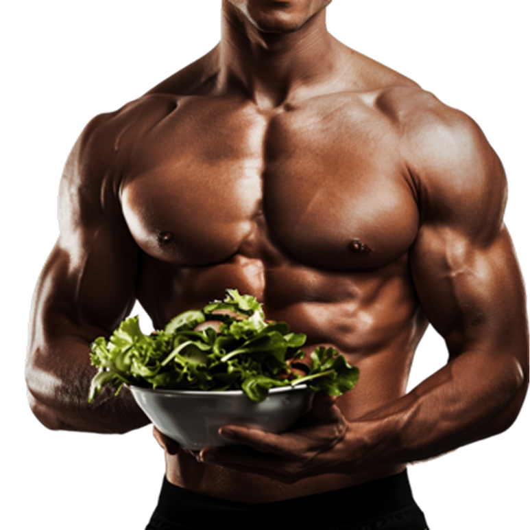

-
Saúde
FísicaTransforme a atividade
- Patrícia Cassol Eickhoff
física num vício, que ele
dará habilidades para
vencer outros. -

A prática de atividade físicas,
além de favorecer a
autoestima e o
bom
funcionamento do organismo,
fortalece o corpo e
estimula a
liberação de neurotransmissores
como serotonina, dopamina e noradrenalina.
O movimento voluntário com gasto energético acima do repouso, traz diversos benefícios: Reduz estresse, ansiedade e sintomas depressivos, melhora o sono, a aprendizagem, a força, o equilíbrio, a flexibilidade e também promove a socialização.
Atividade
Física
Como integrar exercícios
físicos na rotina:
-
Comece aos poucos: Não precisa ser atleta para começar. Comece com 15 minutos de caminhada e aumente gradualmente.
-
Use o dia a dia a seu favor: Prefira escadas em vez de elevador, desça do ônibus um ponto antes ou faça atividades domésticas com mais intensidade.
-
Faça atividades que dão prazer: Encontre uma modalidade que você goste para ter mais motivação e não desista.
-
Crie uma rotina: Estabeleça horários fixos para a prática, criando um hábito.
-
A inatividade pode ser evitada em atividades no lazer, deslocamento, trabalho, estudo ou nas tarefas domésticas.
-
Busque apoio: Encontre um amigo ou familiar que também se interesse pelo seu progresso e te ajude ou acompanhe nos exercícios.
Pré e pós treino
Sugestão de atividades de pré-treino
Preparação antes do treino:
-
Aqueça para o treino render e para evitar lesões.
-
Sabe aquela vontade de já sair treinando com tudo? Pois é, não se renda… seu corpo precisa de um “bom dia!” antes de encarar qualquer esforço, o aquecimento é como ligar o motor antes de acelerar: ele prepara músculos, articulações e até a mente para o que vem pela frente.
Sugestões de aquecimento simples para você incluir antes do treino:
-
Movimente suas articulações: gire ombros, quadris, punhos e tornozelos. É rápido e ajuda a “lubrificar” as juntas.
-
Ative os músculos que vão ser estimulados durante o treino: se for estimular os membros inferiores, faça agachamentos leves; se for estimular os membros superiores, faça flexões ou pranchas curtas.
-
Alongue de forma dinâmica: nada de ficar parado esticando. Prefira movimentos como avanços, rotações de tronco e chutes controlados.
-
Um bom aquecimento leva, em média, de 8 a 12 minutos e já faz uma grande diferença em sua performance e segurança.
Sugestão de atividades de pós-treino
Descansar depois do treino:
Treinar é importante, mas se regenerar é mais ainda. É no descanso e na reposição que seu corpo evolui.
-
Alongue de forma leve e relaxada: agora sim, pode fazer alongamento estático, segurando cada posição por 20–30 segundos. Isso ajuda a reduzir a tensão muscular.
-
Hidrate-se: você perdeu líquidos e sais minerais, então beba água. Se o treino for muito intenso, uma reposição com isotônico pode ser útil.
-
Alimente-se bem: combine proteína (para reparar músculos) e carboidrato (para repor energia). Dê atenção ao descanso: sono de qualidade e pausas entre treinos são parte do progresso.